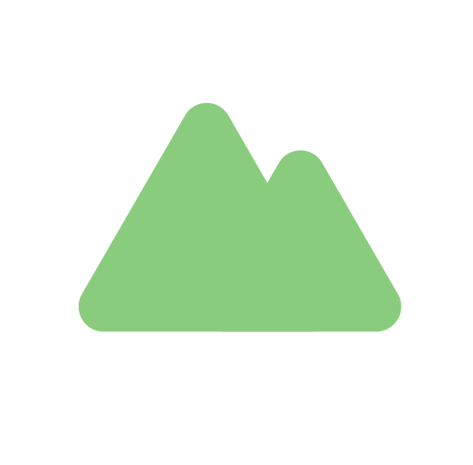
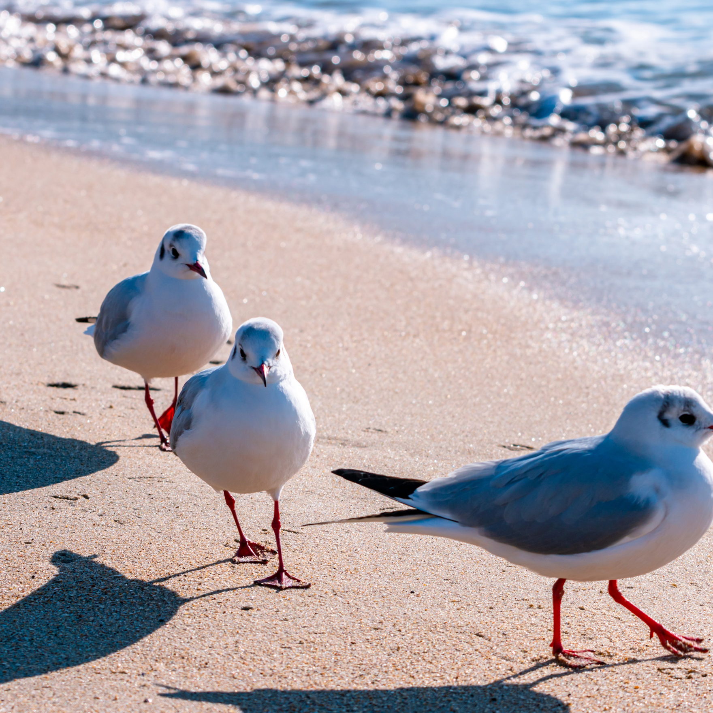
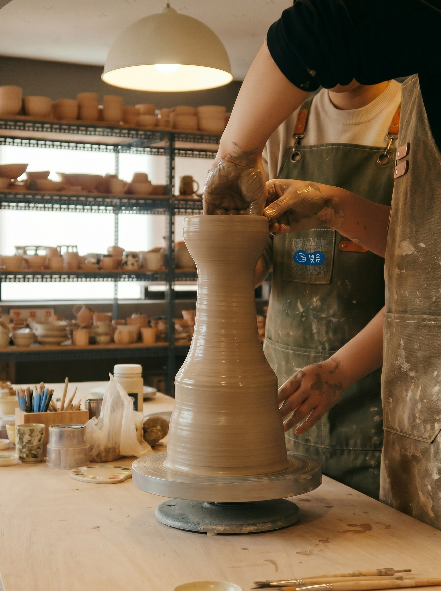
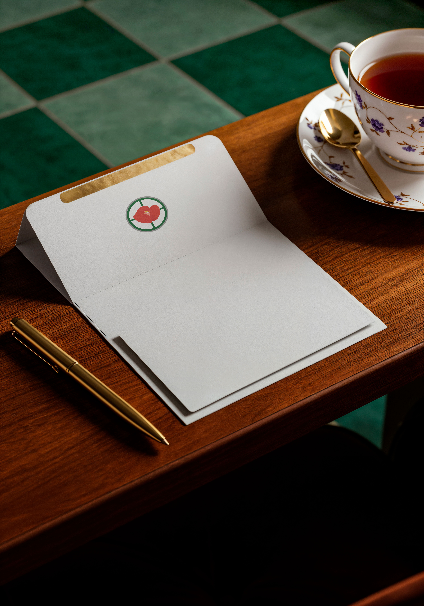
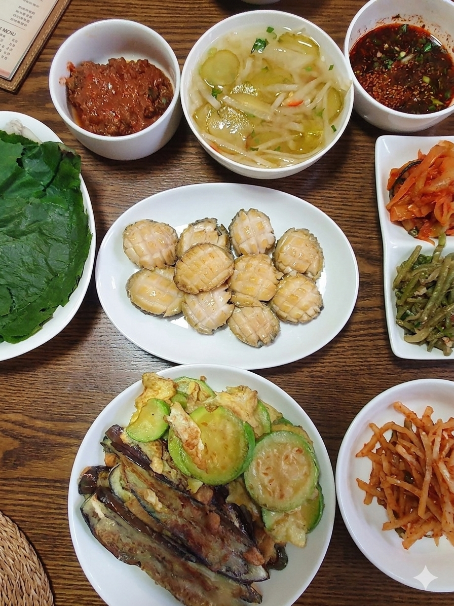
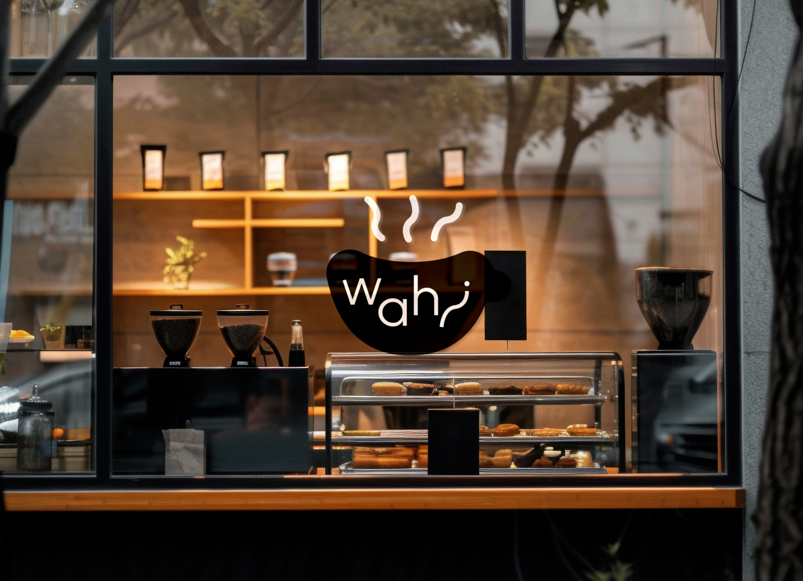
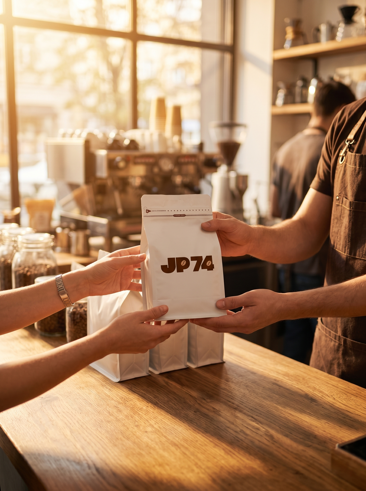
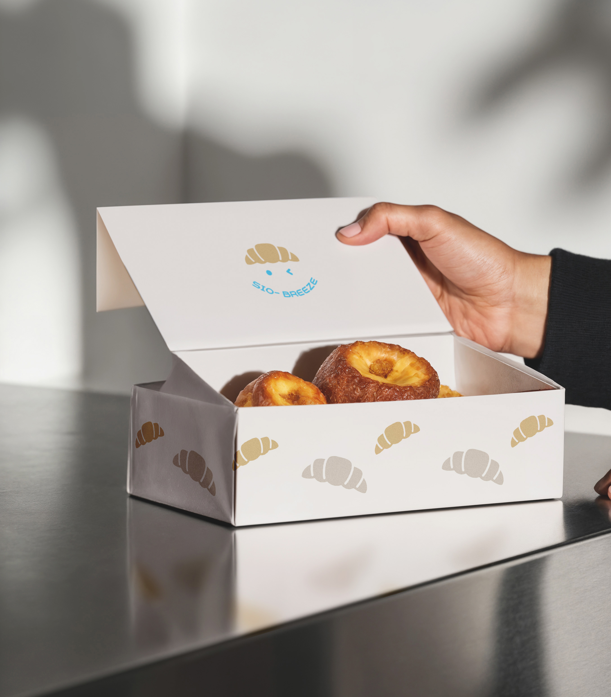

오늘의 부산을
선물합니다.
부사네를 소개합니다.


오늘의 부산을
선물합니다.
부사네를 소개합니다.


부산의 골목길에는 매일 묵묵히 자신만의 자리를 지켜온 수많은 소상공인들이 있습니다.
'무심코 지나쳤던 카페는 어떤 곳일까?', ‘언제나 따뜻한 불빛을 밝히던 그 식당은 어떻게 시작되었을까?'
부사네는 호기심과 질문들을 모아 하나의 브랜드가 되었습니다.
부사네는 단순히 상품을 중개하는 플랫폼이 아닙니다.
부산 소상공인들의 숨은 이야기를 발굴하는 '스토리 아카이브'이자, 그들의 진심이 담긴 제품을 가장 가치 있게 소개하는 '로컬 큐레이터'입니다.
우리는 생산자의 진정성과 소비자의 안목을 연결하여, 단순한 소비를 넘어 서로를 응원하는 건강한 로컬 생태계를 만들어가고자 합니다.
소상공인과 소비자, 그리고 부사네가 함께 그려갈 부산 골목길의 내일. 그 가치 있는 여정에 여러분을 초대합니다.
부사네 로고는...
부산을 상징하는 여러 요소들로 로고를 만들었습니다.
산은 지붕으로, 바다는 바닥으로, 그리고 갈매기와 동백꽃이 집 안에 있는 형태입니다.
‘부사네’라는 이름에 맞추어 집을 형상화하였습니다.
의미를 담은 집 모양을 서브 심볼로 함께 활용하고 있습니다.







부산에서 활동하고 있는 다양한 분야의 소상공인들을 발굴해나가고 있습니다.

소상공인의 이야기와 제품을 온라인·오프라인으로 소비자에게 전합니다.

소비자와 소상공인이 진심으로 만날 수 있도록 다리를 놓습니다.
브랜드 전체 보기



물결 빚음
흘러가는 물결을 빚어내는 도자기 스튜디오 물결 빚음입니다.

동백서실
남포동 골목길에 위치한 고즈넉한 찻집, 동백서실입니다.

계단 위 식탁
할머니의 손맛이 가득한 집밥 정식을 느껴보세요.

와히(Wahi)
따뜻한 시그니처 메뉴들로 유행을 선도하고 있는 카페입니다.

JP74
직접 블렌딩한 원두를 바로 구매할 수 있는 카페입니다.

시오브리즈
지나가기만 해도 빵 냄새가 솔솔 나는 따끈따끈한 빵집 시오브리즈입니다.

아뜰리에 제로
차분하면서도 고급스러운 가죽공예 제품들을 판매하는 아뜰리에 제로입니다.
윤슬 인화소
부산 곳곳에서의 추억을 따뜻한 감성으로 기록하는 사진 스튜디오 윤슬인화소입니다.

♥ CS 고객사랑 서비스 본부
이메일 : busane@gmail.com
채팅 상담 : 카카오톡
채널톡
상담 시간: 09:30 ~ 18:00
(점심시간 12:00 ~ 13:00)
© 2026 Busane. All rights reserved.
♥ 부사네 SNS